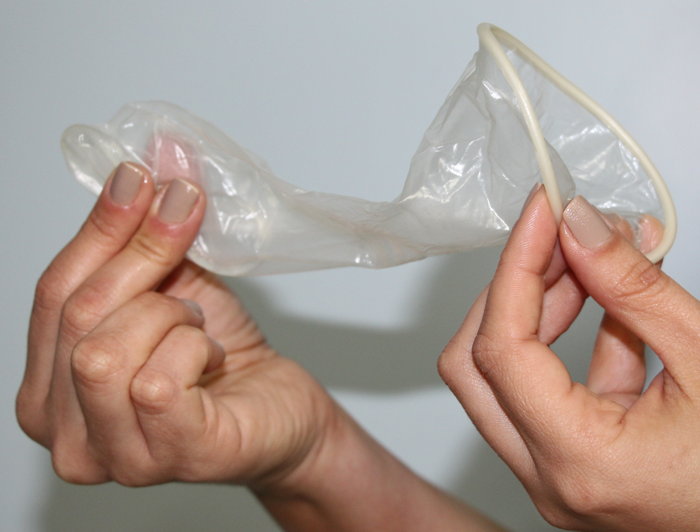
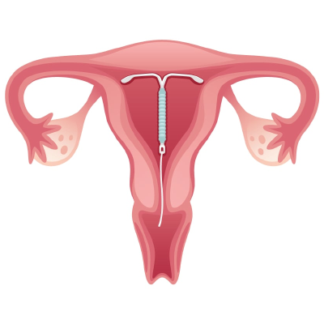

Métodos contraceptivos de barreira:
Camisinha Femenina:
O preservativo feminino (ou interno) é semelhante a um saco plástico e é inserido na vagina ou no ânus antes do ato sexual como método contraceptivo e proteção contra doenças sexualmente transmissíveis (DSTs). Funciona como os outros preservativos; a única diferença é que seu uso é interno.
DIU:
O dispositivo intrauterino é um pequeno objeto de plástico em formato de T inserido no útero para atuar como contraceptivo. Eficácia superior a 99%. Dura de três a seis anos.
Diafragma:
Um diafragma é um copinho de silicone em forma de cúpula que é inserido na vagina algumas horas antes do ato sexual para evitar a gravidez. Para ser eficaz, é necessário que ele seja usado com espermicida para impedir que os espermatozoides cheguem aos óvulos.
 
Métodos contraceptivos hormonais:
Pílula anticoncepcional:
As pílulas contraceptivas orais combinadas são um medicamento de uso diário que contém dois hormônios (estrogênio e progestina) para evitar a gravidez.
Implante anticoncepcional:
O implante é um bastonete bastante pequeno inserido sob a pele do braço da mulher para atuar como contraceptivo. Ele é invisível e evita a gravidez por até três anos.
Anel vaginal:
É um método contraceptivo que inibe a ovulação. Ele consiste em um anel transparente e flexível, de superfície lisa e não absorvente, contendo etonogestrel e etinilestradiol: os mesmos hormônios da maioria das pílulas anticoncepcionais.
Adesivo cutâneo:
O adesivo anticoncepcional libera hormônios na corrente sanguínea que impedem a ovulação, além de tornarem o muco cervical mais espesso, evitando que os espermatozoides consigam chegar até ao útero, diminuindo muito as chances de gravidez.
Métodos definitivos ou cirúrgicos:
Laqueadura:
Laqueadura é um procedimento médico de esterilização para mulheres que têm certeza de que não desejam uma gravidez futura.